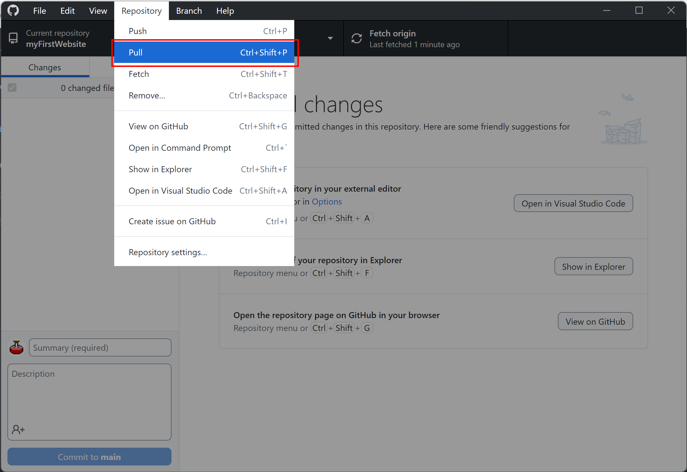

February 15th Agenda:
Creating your git repository:
- Open Github Desktop and sign in with your Github account
- Click File > New Repository.
-
Click choose under local path, navigate to and select your web projects folder.

- Name your repository with exactly the same name as you gave to your first website folder in order to target that folder. You can check Initialize this repository with a README and set the project license to a license of your choosing, then hit Create Repository.
- Your first website folder should now be initialized as a git repository. Double check that this worked by going to your folder and making sure your license and README.md file are there. You might also see a .git folder and .gitattributes file if you have hidden files set to visible in your file explorer. These are what designate your folder as a git repository.
- You've now created a local repository. You need to publish your repository to create a remote (AKA online) version of it on Github. Go back to Github Desktop and click Publish repository in the middle of the window.
- In the dialog box, you can leave everything as it is but make sure to uncheck the box for Keep this code private. We will need the repository to be public in order to set up free website hosting with Github Pages later.
- Once you hit Publish repository, your local and remote repository is now officially set up!
Using git:
Git is a powerful tool for managing your coding projects, keeping track of your projects' changes over time, keeping your files synced across multiple devices, and collaborating with others on the same project. However, it requires a few more steps than you might be used to in order to do things like saving your work. Let's see how that works:
Add
If you were using the command line version of git, you would have to manually tell it to add new files to the list of files the repository is tracking. Github Desktop automatically adds all the files in your repository folder so no need to worry about this one!
Commit
A commit is what you do whenever you want to commit some changes you made to your project to git's version memory. Github Desktop will automatically show you when you have new changes to files that have yet to be committed.
To create a new commit, simply type a short message in the small box in the bottom left describing what was changed/fixed/added and hit commit to main.
Push
The remote (online) version of your repository will not automatically sync with your local repository. Whenever you want to update your remote repository with the changes you made locally, you have to tell git to push those changes to the web.
To do this, hit Push Origin in Github Desktop after you've made at least one local commit.
Pull
Likewise, your local repository will not automatically sync changes from the remote repository. If you're accessing your project on a different device from last time, or if a friend of yours has pushed changes to your remote repository, you'll want to pull those changes to your local repository before you start working, so you have the latest version of all the files.
You can do this by clicking Repository > Pull in Github Desktop.
Recap
Whenever you sit down to work on a personal project with git, your workflow should look something like this:
- Pull from the remote repository to make sure your files are up to date.
- Do some work.
- Save all the files you edited.
- Commit your changes so git will remember them.
- If you are working on a project with others simultaneously, you may want to Pull again at this point. Git will automatically warn you if there are conflicts between the changes you made and changes someone else already pushed, and it will prompt you to resolve them line by line.
- Push your changes to update the remote repository.
Congratulations! You now know the basics of git, one of the most widely used developer tools in the world!